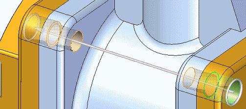
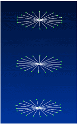

Create bolted connections
For practice using bolt connectors, try the Tutorial: Using bolted connections.
To view the stresses on a bolt connector in the Simulation Results environment, you must select the Force result type in the Create Study (or Modify Study) dialog box when you create or modify the study.
-
Choose the Simulation tab→Connectors group→Bolt command
 .
. -
Select one or more holes on the top face or surface where the head of the bolt or washer meet the part. Eligible geometry includes:
-
Cylinders representing holes.
-
Conical surfaces representing tapered holes.
-
Surface cutouts or circles representing holes on sheet metal parts.
The selected hole(s), as well as all holes with a common cylindrical axis, are highlighted.
Tip:You can connect holes using the Bolt command even when they are of different sizes.
-
-
In the dynamic input box, verify or change the default values for each of the following:
-
Bolt diameter—This value is set to 1.5 times the shaft diameter.
-
Shaft—Specify the shaft diameter.
-
Nut diameter—The default depends upon the hole type, but it is set to 1.5 times the shaft diameter.
-
Prestress force—The default is 0.
Note:-
Bolt diameter and nut diameter values are not directly passed to FEMAP. These values are used for adding valid nodes to the mesh.
-
Prestress values are set on each node of the bolt connection and do have a large impact on the stress value.
-
-
Do one of the following:
-
To accept the highlighted components and finish, right-click or press Enter.
-
To remove a hole from the top face selection set, press Shift and then click the hole.
As you create the bolt connectors, a green edit handle indicates a good connection; a red edit handle indicates an error state. This handle status color-coding is only shown when you are placing or editing the bolt connectors.
Example:If you attempt to place a bolt connector through multiple holes, and if one of the holes is ineligible, then the edit handle for that hole is shown in red during placement.
Bolt connectors are created through all holes that share the same cylindrical axis as the holes selected on the top face.

-
-
You can set additional options on the Bolt command bar. These include:
-
Use the Material List to choose a different material for the bolt connectors than is used in the parts they connect.
-
Use the Bolt Type list to specify the creation method for the bolt connectors. For example, to select multiple holes, you can use the following methods:
-
In the graphics window, click multiple individual holes.
-
On the command bar, click Bolt Selection Type, choose the Plane option, and then click one hole.
-
-
To create a rigid element at the location where two holes meet, click Spider
 . You can view the spider in the Simulation Results environment. Conceptually, it looks like this:
. You can view the spider in the Simulation Results environment. Conceptually, it looks like this:
For information about using rigid spiders, see Bolt connectors.
-
-
You can edit a bolt connector using the bolt connector handle.
How do I
Create connectors based on assembly relationshipsCreate assembly connectors using the Auto command
Create manual connections between faces or surfaces
Replace target and source connection regions
Change connector region direction
Edit a bolt connector
Learn more
Assembly connectorsTarget and source connector regions
Assembly connector handles, labels, and symbols
Glue and no penetration contact connectors
Thermal connectors
Bolt connectors
Bolt connector simulation results
Look up more details
Auto command barAssembly Connector command bar
Assembly Connector Properties dialog box
Bolt command bar